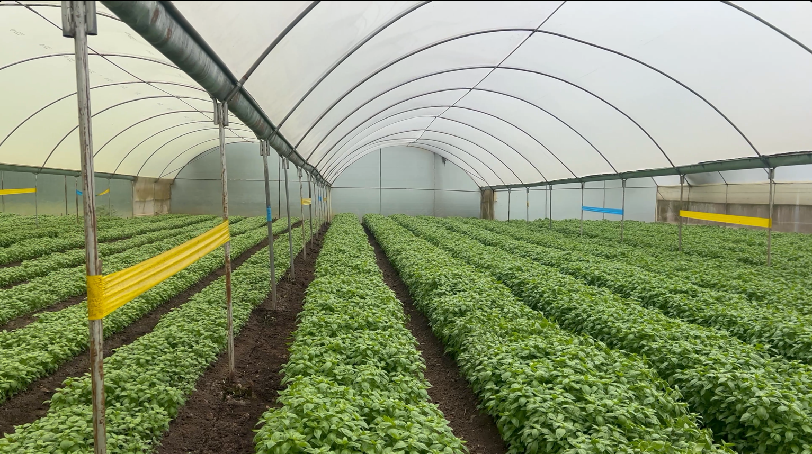

Sweet Basil
📍 Ruai & Karen, Nairobi
Premium fresh herbs cultivated on our own farms in Ruai & Karen, Nairobi — then cold-chain shipped to the world. One origin, fully traceable.

Not a trader. A grower. We own every step — seed, soil, harvest, and shipment.
Extropica Fresh is a family-run Kenyan grower and exporter of premium fresh herbs. Unlike middlemen who buy and resell, we cultivate our herbs on our own farms in Ruai and Karen, Nairobi.
That means single-origin quality we control end to end — from varietal selection and soil management to harvest timing, grading, packing, and cold-chain dispatch. Every order traces back to our own plots.
Read our story →Cultivated on our own Kenyan soil, then graded, packed, and exported single-origin.
Single-origin herbs from our farms in Ruai & Karen — never a multi-sourced supply chain stitched together from other growers.
Cooled within hours of harvest and kept at temperature through to dispatch.
Every order traces back to our own farm plots — you always know the source.
Work straight with the team that grows, packs, and ships your herbs — reliable supply for boutique and bulk orders alike, with no middlemen in between.
A transparent process we own end to end — scroll to follow the journey.
We cultivate herbs on our own farms in Nairobi using sustainable, soil-enriching practices and quality seed stock.
Hand-harvested at peak maturity to lock in maximum flavour, aroma, and shelf-life for international markets.
Every batch is graded and inspected. Only herbs meeting export standards move forward.
Packed in ventilated cartons, clamshells, or retail bunches — tailored to buyer and market.
Cold-chain dispatch with full phytosanitary documentation and customs clearance.
One origin. Full traceability. Cold-chain freshness from the moment we harvest.
Start an export inquiry →Talk directly to the grower. Tell us your herbs, volumes, packaging, and destination — we'll send a tailored quote.